Candidate List 20260625 Previous Day Next Day Section 1: New Sources (age<1d) Cosmological Afterglow
Section 2: Old (1-5d) sources observed last night placeholder
Section 1: New Afterglow/FBOT Cands Last Night (2)
1. ZTF26abdtuat (FBOT?) [Back to Top] [Share] [Trigger Swift] [Fritz ] [Lasair ]RA, Dec: 197.10159, 15.88216 13h 8m24.38s, 15d52m55.78sGalactic (l, b): 323.08893, 78.08457 ext(g-r) = 0.027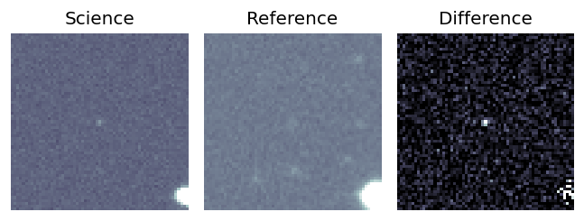
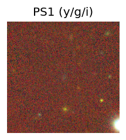
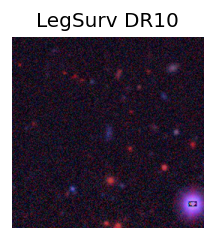
peak abs mag = -21.34 LegacySurvey: 1 sources in 3 arcsec Closest: d = 0.46 arcsec, 222.5 deg (east of north) photoz=0.11 (68% bounds 0.08, 0.16), type=EXP peak abs mag = -18.8 (68% bounds -18.04, -19.83) 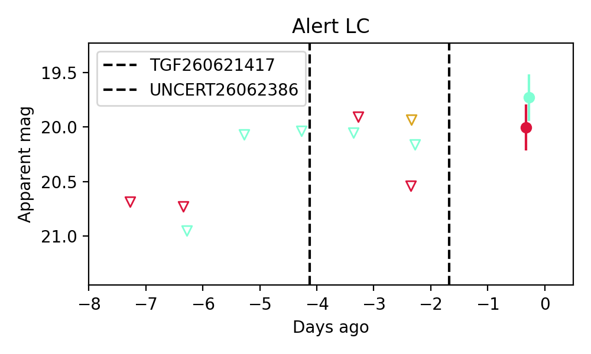
2. ZTF26abdwukr (Afterglow?) [Back to Top] [Share] [Trigger Swift] [Fritz ] [Lasair ]RA, Dec: 319.09724, 54.55831 21h16m23.34s, 54d33m29.92sGalactic (l, b): 94.97909, 3.80827 ext(g-r) = 1.923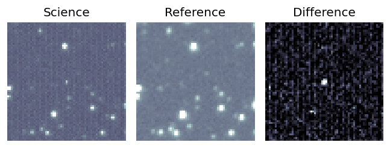
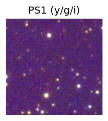
PS1: 1 source in 3 arcsec Closest: d = 3.82 arcsec photoz=0.91+/-0.16 peak abs mag = -27.99 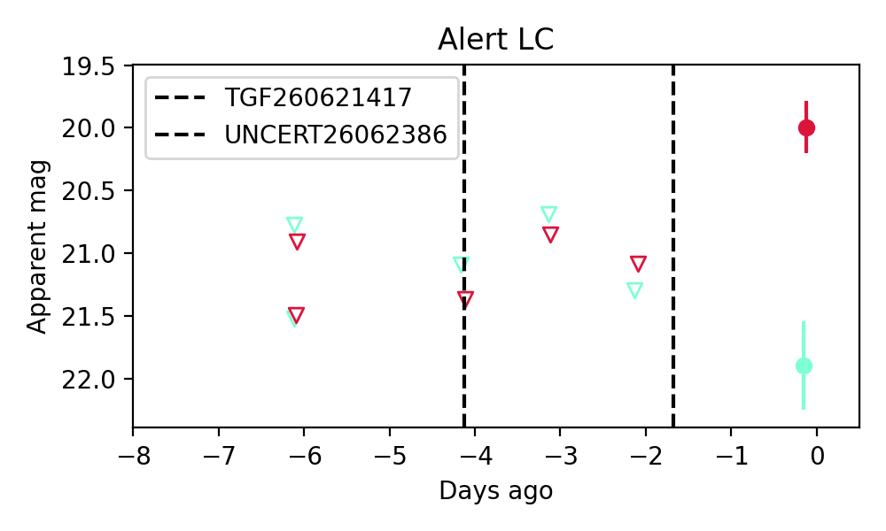
Consistent with synchrotron, g-r>0!
Section 2: Older Sources Observed Last Night (21)
0. ZTF26abcmljm (Afterglow?) [Back to Top] [Share] [Trigger Swift] [Fritz ] [Lasair ]RA, Dec: 242.37874, -4.40207 16h 9m30.90s, -4d-24m-7.45sGalactic (l, b): 7.32553, 32.75651 ext(g-r) = 0.223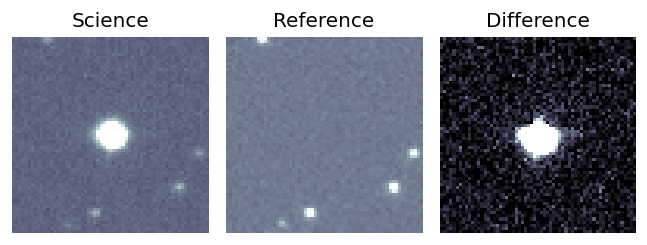
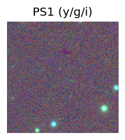
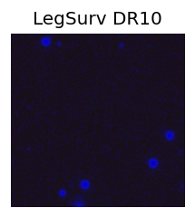
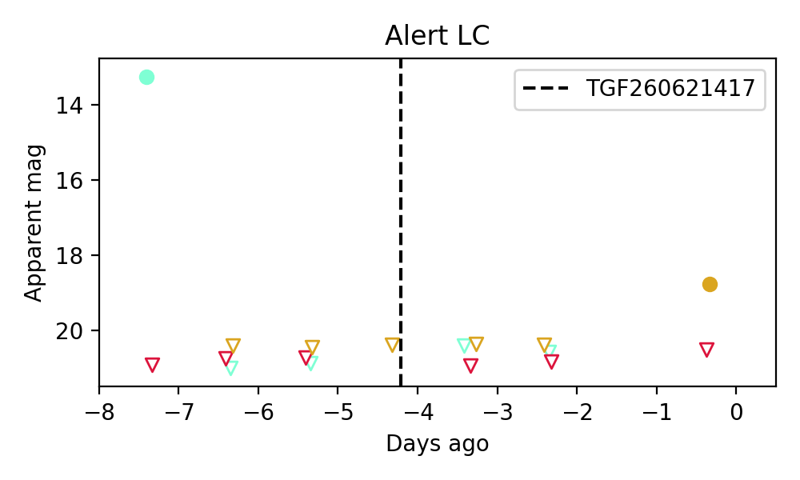
1. ZTF26abcnwjm (Afterglow?) [Back to Top] [Share] [Trigger Swift] [Fritz ] [Lasair ]RA, Dec: 305.60023, 38.79738 20h22m24.05s, 38d47m50.58sGalactic (l, b): 76.96882, 1.00703 ext(g-r) = 3.233PS1: 1 source in 3 arcsec Closest: d = 0.28 arcsec photoz=0.33+/-0.13 peak abs mag = -28.38
2. ZTF26abcqesk (FBOT?) [Back to Top] [Share] [Trigger Swift] [Fritz ] [Lasair ]RA, Dec: 252.31072, 55.09314 16h49m14.57s, 55d 5m35.30sGalactic (l, b): 83.40401, 39.25719 ext(g-r) = 0.015LegacySurvey: 1 sources in 3 arcsec Closest: d = 0.65 arcsec, 170.1 deg (east of north) photoz=0.37 (68% bounds 0.25, 0.54), type=REX peak abs mag = -24.0 (68% bounds -22.97, -24.96) Consistent with synchrotron, g-r>0!
3. ZTF26abcqplv (Afterglow?) [Back to Top] [Share] [Trigger Swift] [Fritz ] [Lasair ]RA, Dec: 239.60315, 27.22953 15h58m24.76s, 27d13m46.31sGalactic (l, b): 44.23003, 48.67087 ext(g-r) = 0.048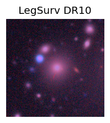
peak abs mag = -19.10 Consistent with synchrotron, g-r>0!
4. ZTF26abcswjr (Afterglow?) [Back to Top] [Share] [Trigger Swift] [Fritz ] [Lasair ]RA, Dec: 289.34479, 1.78097 19h17m22.75s, 1d46m51.48sGalactic (l, b): 37.48795, -4.95095 ext(g-r) = 0.483 Consistent with synchrotron, g-r>0!
5. ZTF26abcyshu (Afterglow?) [Back to Top] [Share] [Trigger Swift] [Fritz ] [Lasair ]RA, Dec: 342.95558, -4.22255 22h51m49.34s, -4d-13m-21.17sGalactic (l, b): 66.39881, -53.41541 WARNING: 2.79 deg from ecliptic plane ext(g-r) = 0.046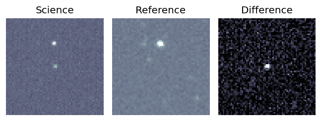
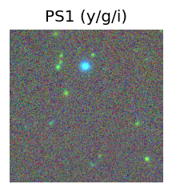
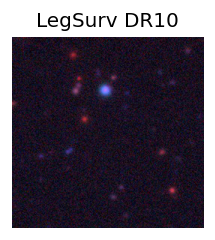
peak abs mag = -24.17 LegacySurvey: 1 sources in 3 arcsec Closest: d = 9.60 arcsec, 61.2 deg (east of north) photoz=0.69 (68% bounds 0.65, 0.72), type=REX peak abs mag = -24.18 (68% bounds -24.05, -24.29) 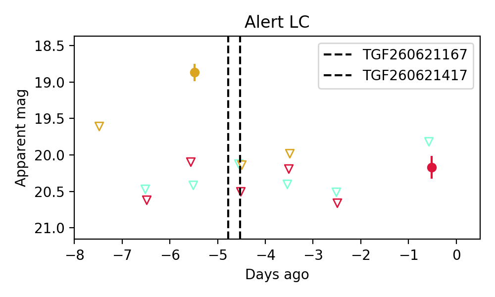
6. ZTF26abdbeqv (FBOT?) [Back to Top] [Share] [Trigger Swift] [Fritz ] [Lasair ]RA, Dec: 281.32661, 49.88352 18h45m18.39s, 49d53m0.66sGalactic (l, b): 79.17755, 21.34898 ext(g-r) = 0.051LegacySurvey: 1 sources in 3 arcsec Closest: d = 0.77 arcsec, 178.7 deg (east of north) photoz=0.71 (68% bounds 0.25, 1.04), type=REX peak abs mag = -24.27 (68% bounds -21.56, -25.29)
7. ZTF26abdfeix (Afterglow?) [Back to Top] [Share] [Trigger Swift] [Fritz ] [Lasair ]RA, Dec: 234.48178, 60.57904 15h37m55.63s, 60d34m44.53sGalactic (l, b): 94.70297, 46.38476 ext(g-r) = 0.012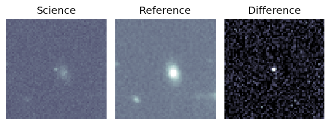
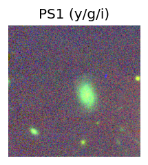
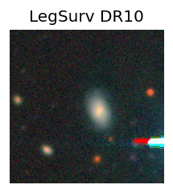
peak abs mag = -17.96 LegacySurvey: 1 sources in 3 arcsec Closest: d = 5.93 arcsec, 249.3 deg (east of north) photoz=0.08 (68% bounds 0.05, 0.11), type=SER peak abs mag = -18.52 (68% bounds -17.27, -19.35) 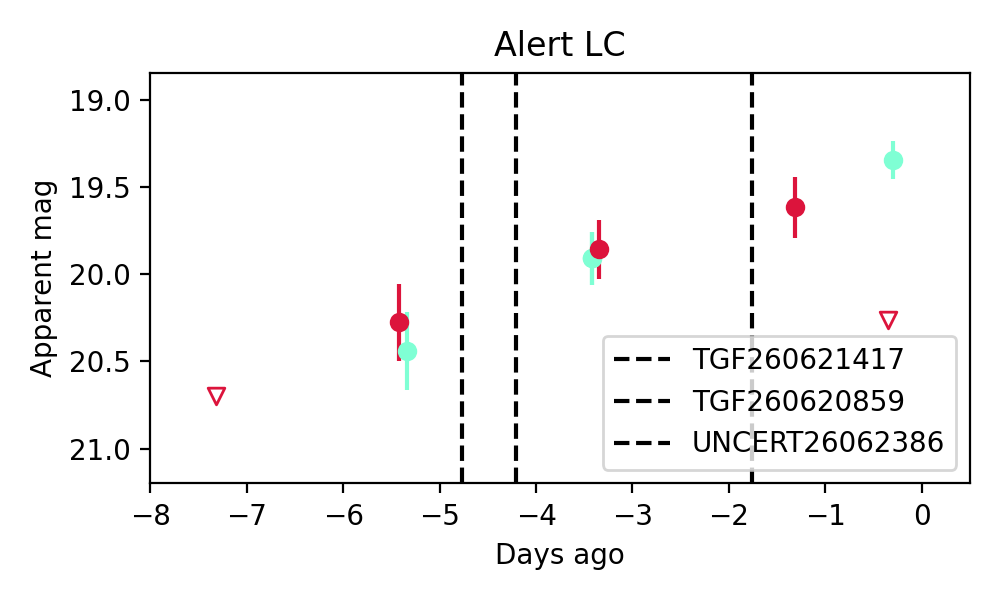
8. ZTF26abdgdtq (Afterglow?FBOT?) [Back to Top] [Share] [Trigger Swift] [Fritz ] [Lasair ]RA, Dec: 269.13505, 41.68856 17h56m32.41s, 41d41m18.83sGalactic (l, b): 68.09912, 27.44831 ext(g-r) = 0.035LegacySurvey: 1 sources in 3 arcsec Closest: d = 2.13 arcsec, 146.6 deg (east of north) photoz=0.55 (68% bounds 0.38, 0.81), type=PSF peak abs mag = -23.71 (68% bounds -22.76, -24.71) Consistent with synchrotron, g-r>0!
9. ZTF26abdgrxy (Afterglow?) [Back to Top] [Share] [Trigger Swift] [Fritz ] [Lasair ]RA, Dec: 256.74188, -20.34669 17h 6m58.05s, -20d-20m-48.08sGalactic (l, b): 2.34327, 12.05178 WARNING: 2.52 deg from ecliptic plane ext(g-r) = 0.33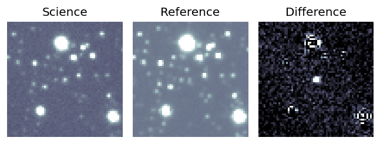
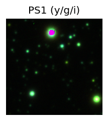
PS1: 1 source in 3 arcsec Closest: d = 0.90 arcsec photoz=0.19+/-0.17 peak abs mag = -23.19 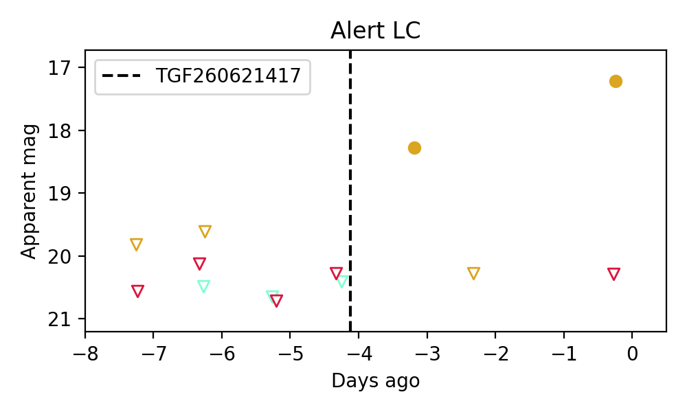
10. ZTF26abdhemt (FBOT?) [Back to Top] [Share] [Trigger Swift] [Fritz ] [Lasair ]RA, Dec: 339.84304, -0.61895 22h39m22.33s, 0d-37m-8.21sGalactic (l, b): 67.30667, -48.69008 ext(g-r) = 0.055peak abs mag = -21.61 LegacySurvey: 1 sources in 3 arcsec Closest: d = 2.32 arcsec, 153.1 deg (east of north) photoz=0.67 (68% bounds 0.5, 0.94), type=PSF peak abs mag = -23.35 (68% bounds -22.57, -24.24)
11. ZTF26abdohuy (FBOT?) [Back to Top] [Share] [Trigger Swift] [Fritz ] [Lasair ]RA, Dec: 294.40919, 66.19559 19h37m38.21s, 66d11m44.13sGalactic (l, b): 98.01175, 20.19838 ext(g-r) = 0.118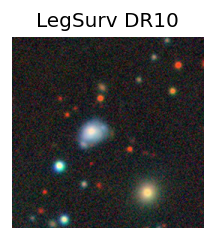
LegacySurvey: 1 sources in 3 arcsec Closest: d = 1.57 arcsec, 249.1 deg (east of north) photoz=0.46 (68% bounds 0.35, 0.59), type=REX peak abs mag = -21.87 (68% bounds -21.15, -22.5) Consistent with synchrotron, g-r>0!
12. ZTF26abdtjxx (Afterglow?) [Back to Top] [Share] [Trigger Swift] [Fritz ] [Lasair ]RA, Dec: 337.51524, -2.07901 22h30m3.66s, -2d-4m-44.45sGalactic (l, b): 63.34942, -47.90374 ext(g-r) = 0.052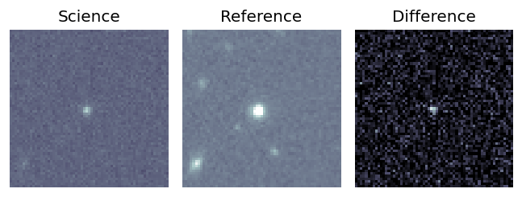
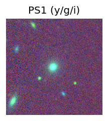
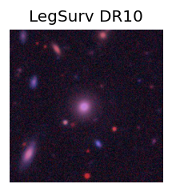
peak abs mag = -19.11 LegacySurvey: 1 sources in 3 arcsec Closest: d = 1.16 arcsec, 118.2 deg (east of north) photoz=0.13 (68% bounds 0.12, 0.14), type=SER peak abs mag = -18.98 (68% bounds -18.8, -19.12) 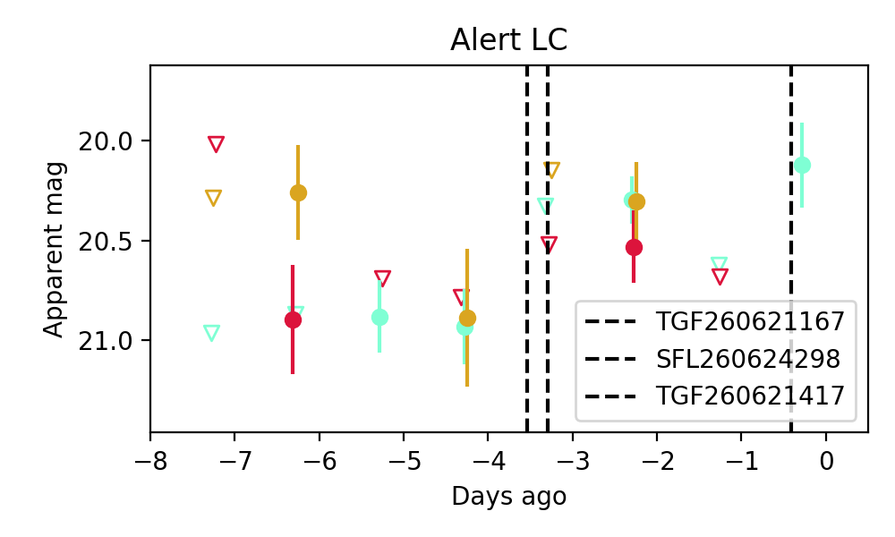
Consistent with synchrotron, g-r>0!
13. ZTF26abduqbm (FBOT?) [Back to Top] [Share] [Trigger Swift] [Fritz ] [Lasair ]RA, Dec: 263.74424, 12.91482 17h34m58.62s, 12d54m53.35sGalactic (l, b): 36.24859, 22.70488 ext(g-r) = 0.179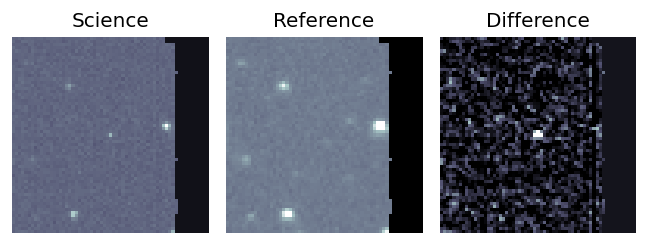
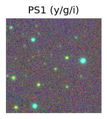
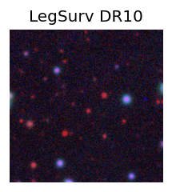
LegacySurvey: 1 sources in 3 arcsec Closest: d = 2.54 arcsec, 200.8 deg (east of north) photoz=0.37 (68% bounds 0.13, 0.93), type=PSF peak abs mag = -21.58 (68% bounds -19.09, -24.0) 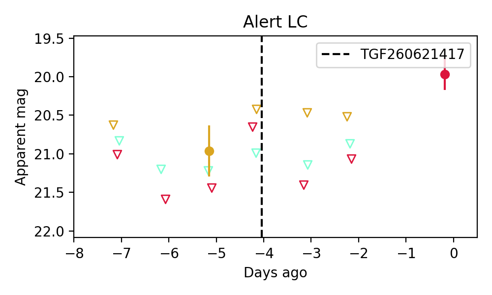
14. ZTF26abdusca (FBOT?) [Back to Top] [Share] [Trigger Swift] [Fritz ] [Lasair ]RA, Dec: 283.46275, 59.89637 18h53m51.06s, 59d53m46.92sGalactic (l, b): 89.93374, 22.94085 ext(g-r) = 0.057LegacySurvey: 1 sources in 3 arcsec Closest: d = 2.36 arcsec, 128.3 deg (east of north) photoz=0.13 (68% bounds 0.02, 0.46), type=REX peak abs mag = -19.66 (68% bounds -15.46, -22.67)
15. ZTF26abdvrbs (FBOT?) [Back to Top] [Share] [Trigger Swift] [Fritz ] [Lasair ]RA, Dec: 247.61221, 61.08345 16h30m26.93s, 61d 5m0.43sGalactic (l, b): 91.72211, 40.35234 ext(g-r) = 0.023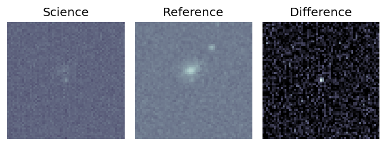
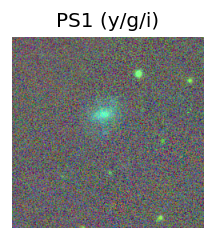
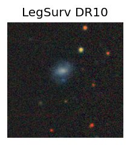
LegacySurvey: 1 sources in 3 arcsec Closest: d = 1.25 arcsec, 105.5 deg (east of north) photoz=0.32 (68% bounds 0.05, 0.83), type=DEV peak abs mag = -20.92 (68% bounds -16.63, -23.41) 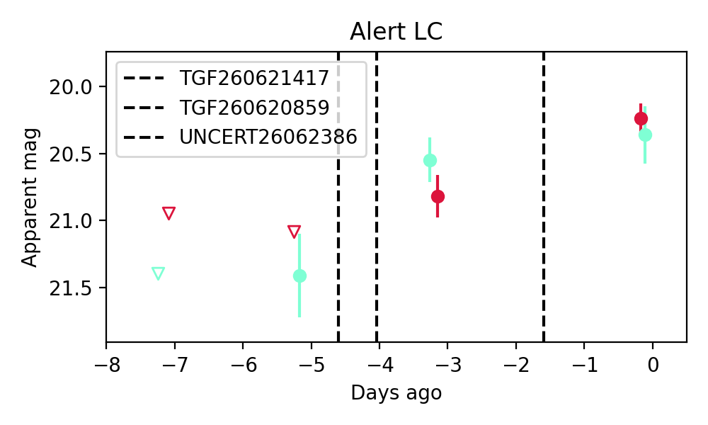
Consistent with synchrotron, g-r>0!
16. ZTF26abdvuuo (Afterglow?FBOT?) [Back to Top] [Share] [Trigger Swift] [Fritz ] [Lasair ]RA, Dec: 291.09883, 37.31962 19h24m23.72s, 37d19m10.62sGalactic (l, b): 69.85954, 10.0795 ext(g-r) = 0.242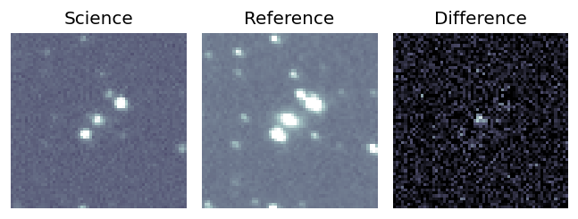
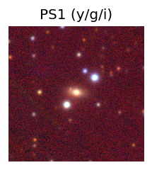
peak abs mag = -18.50 peak abs mag = -18.40 PS1: 1 source in 3 arcsec Closest: d = 0.25 arcsec photoz=0.12+/-0.01 peak abs mag = -19.52 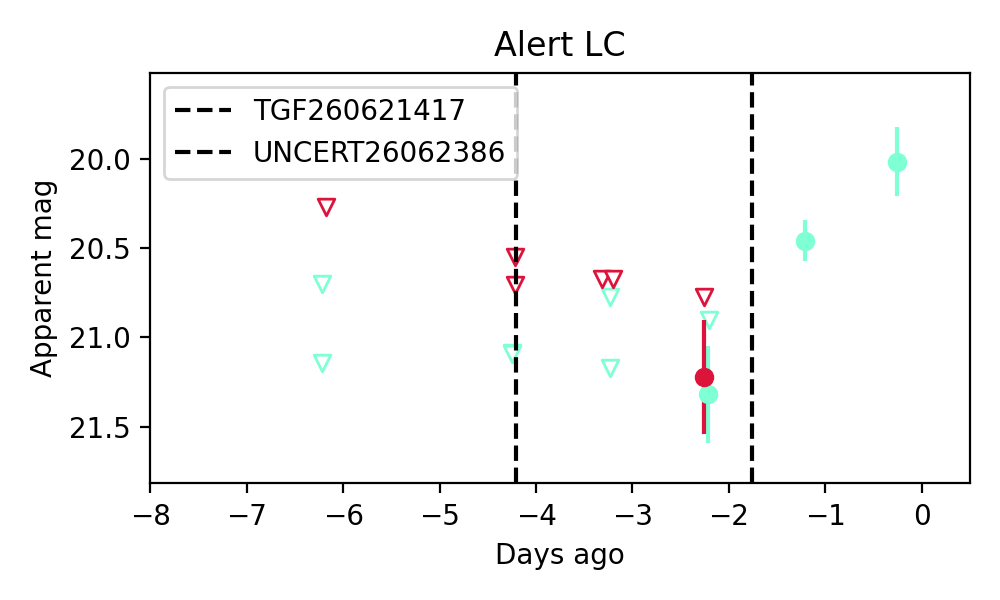
Consistent with synchrotron, g-r>0!
17. ZTF26abdwebl (Afterglow?) [Back to Top] [Share] [Trigger Swift] [Fritz ] [Lasair ]RA, Dec: 286.1213, 20.71795 19h 4m29.11s, 20d43m4.62sGalactic (l, b): 52.89043, 6.54295 ext(g-r) = 0.641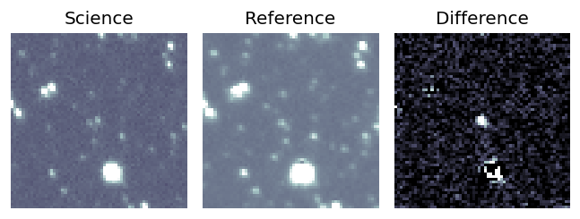
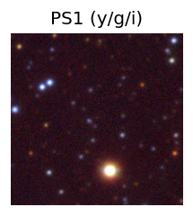
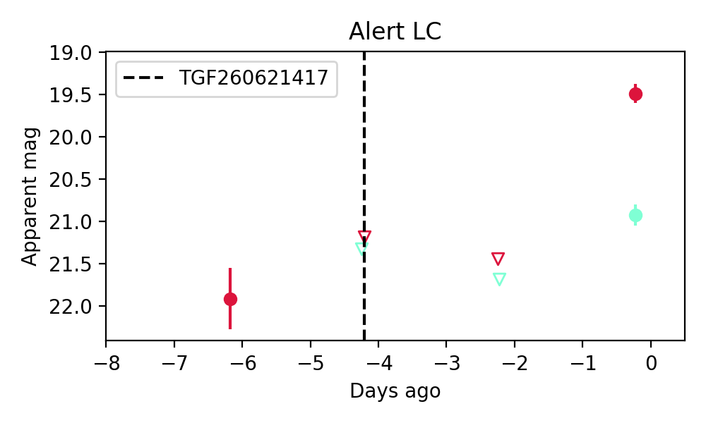
Consistent with synchrotron, g-r>0!
18. ZTF26abdweim (FBOT?) [Back to Top] [Share] [Trigger Swift] [Fritz ] [Lasair ]RA, Dec: 276.25542, 38.29311 18h25m1.30s, 38d17m35.20sGalactic (l, b): 66.14062, 21.27839 ext(g-r) = 0.032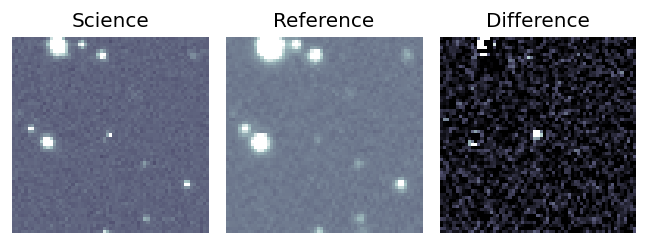
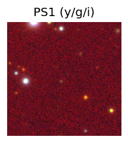
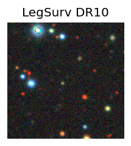
LegacySurvey: 1 sources in 3 arcsec Closest: d = 2.52 arcsec, 133.6 deg (east of north) photoz=0.27 (68% bounds 0.07, 0.5), type=PSF peak abs mag = -20.9 (68% bounds -17.66, -22.47) 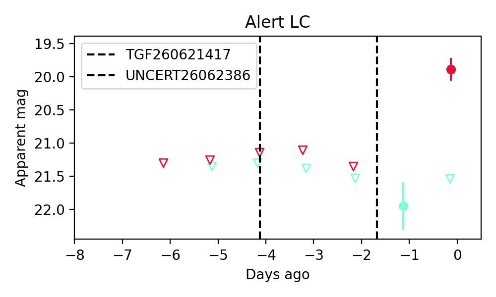
19. ZTF26abdwume (FBOT?) [Back to Top] [Share] [Trigger Swift] [Fritz ] [Lasair ]RA, Dec: 352.51743, 11.32152 23h30m4.18s, 11d19m17.49sGalactic (l, b): 93.08077, -46.77992 ext(g-r) = 0.068peak abs mag = -21.54 LegacySurvey: 1 sources in 3 arcsec Closest: d = 0.38 arcsec, 148.9 deg (east of north) photoz=0.24 (68% bounds 0.17, 0.29), type=REX peak abs mag = -20.66 (68% bounds -19.78, -21.17)
20. ZTF26abdwymi (FBOT?) [Back to Top] [Share] [Trigger Swift] [Fritz ] [Lasair ]RA, Dec: 331.54804, 0.16444 22h 6m11.53s, 0d 9m51.99sGalactic (l, b): 60.52781, -41.85035 ext(g-r) = 0.089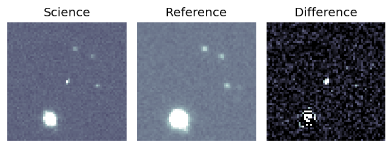
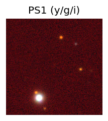
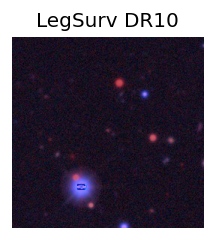
LegacySurvey: 1 sources in 3 arcsec Closest: d = 0.58 arcsec, 2.0 deg (east of north) photoz=0.62 (68% bounds 0.48, 0.74), type=REX peak abs mag = -23.33 (68% bounds -22.67, -23.79) 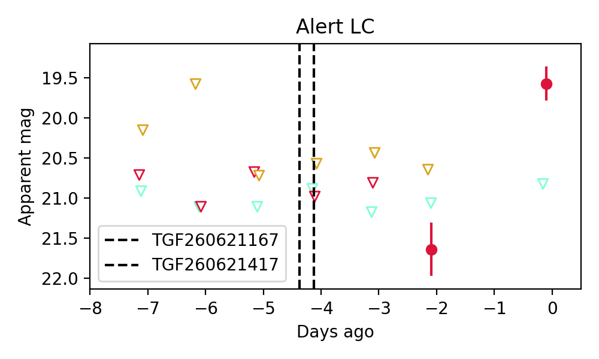